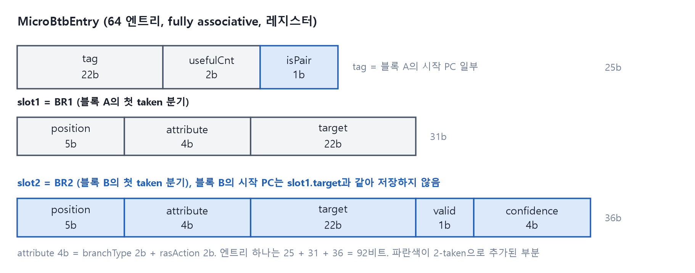
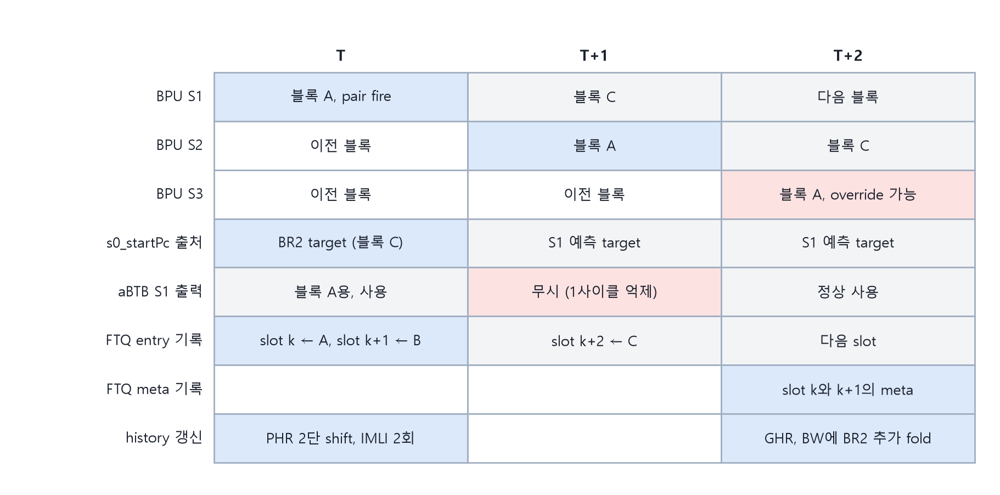
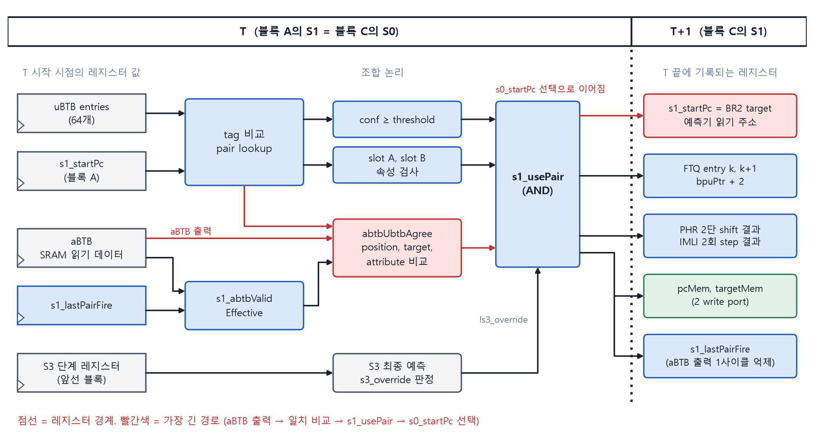
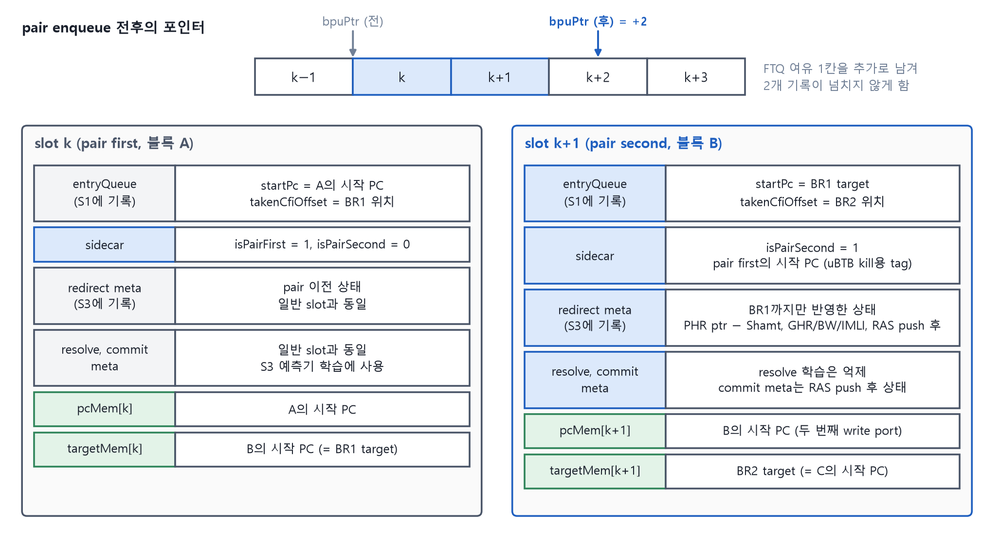
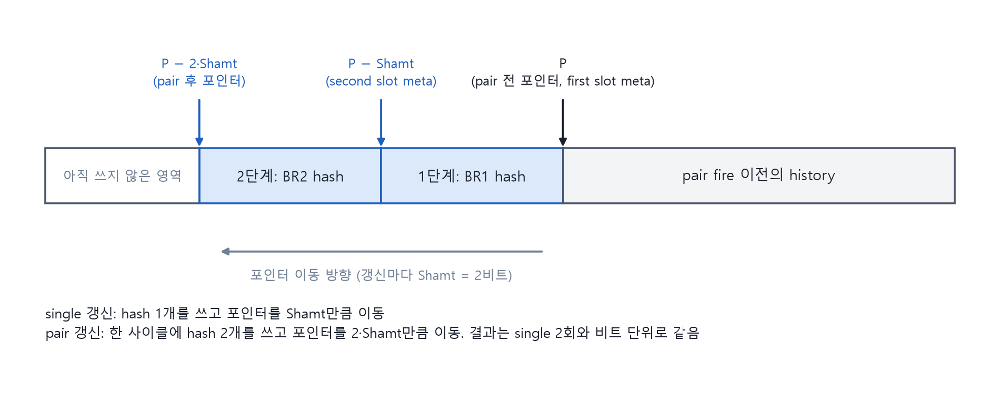

4장 · 2-taken: 예측기를 두 번 읽지 않고 분기 두 개를 맞히기
예측기는 사이클당 블록 하나만 읽는다. 그런데 한 사이클에 taken 분기 두 개를 예측해야 한다. 두 번째 분기는 어디서 오는가.
답은 첫 번째 블록의 uBTB 엔트리 안에 두 번째 분기를 미리 적어 두는 것이다. 블록 A를 조회할 때 BR1과 함께 BR2가 나온다. 블록 B는 BPU 파이프라인을 지나지 않는다.
이 장에서 배우는 것
- 블록 B가 예측기를 거치지 않는다는 사실에서 slot별 허용 타입이 어떻게 정해지는지 유도할 수 있다.
- uBTB가 pair를 어떻게 배우고, 어떤 조건에서 즉시 버리는지 설명할 수 있다.
- pair fire 사이클에 FTQ, history, aBTB에서 일어나는 일을 순서대로 말할 수 있다.
- "pair 1회 = single 2회"라는 불변식이 왜 필요하고 어디서 지켜지는지 설명할 수 있다.
4.1 두 번째 분기는 무엇이어도 되는가
블록 B는 S3 예측기의 도움을 받지 못한다. 그러므로 BR2는 S3 없이도 맞힐 수 있는 분기여야 한다. 이 한 문장에서 slot별 허용 타입이 나온다.
| 허용 | 제외 | 이유 | |
|---|---|---|---|
| slot A (BR1) | conditional, direct jump, direct call | return, indirect | 블록 A는 S3까지 정상 검증된다. 다만 return과 indirect는 target이 매번 달라 pair의 전제가 흔들린다 |
| slot B (BR2) | direct jump, conditional | call, return, indirect | 블록 B는 RAS, ITTAGE, TAGE를 읽지 못한다. conditional은 항상 taken인 것만 대상으로 하고 문턱을 높인다 |
BR2가 틀리면 backend redirect로만 교정된다. 2장 실험 2의 13 사이클이다. 그래서 pair는 보수적으로 낸다. 이 정책 덕분에 S2, S3 예측기에 두 번째 읽기 포트를 달지 않아도 된다. 이것을 Limited 2-taken이라 부른다.
4.2 uBTB 엔트리에 자리를 하나 더 만들기

그림 4-1. uBTB 엔트리 구조. slot1이 BR1, slot2가 BR2다.
uBTB는 64 엔트리 fully associative 레지스터 배열이다. 조합 논리로 같은 사이클에 결과가 나온다. 엔트리의 slot1에 BR1, slot2에 BR2를 저장한다. 엔트리 하나는 92비트다. attribute는 branchType 2비트와 rasAction 2비트, confidence는 4비트다.
블록 B의 시작 PC는 slot1의 target과 같다. 따로 저장하지 않는다. tag가 맞으면 slot1은 기존 single 예측으로 나가고, slot1과 slot2 묶음은 별도 출력(pairPrediction)으로 나간다.
한 가지 검사가 lookup 단계에 들어 있다. BR2 위치가 블록 B의 페이지를 넘어가면 pair 출력을 내지 않는다. ICache가 페이지를 넘는 블록을 받지 않기 때문이다. 블록 B는 BPU의 페이지 절단 로직을 지나지 않으므로 여기서 직접 막아야 한다(6.2).
4.3 pair는 어떻게 배우는가
학습 입력은 fastTrain이다. S3 최종 예측으로 uBTB를 바로 학습시키는 기존 경로다. 연속한 두 fastTrain이 다음을 모두 만족하면 chain으로 본다.
- 앞 블록의 예측이 taken이다.
- 뒤 블록의 시작 PC가 앞 블록의 target과 같다.
- 두 블록의 시작 PC가 서로 다르다. 자기 자신으로 도는 루프는 제외한다.
- 앞 분기가 return이나 indirect가 아니다.
- 앞 블록의 uBTB 엔트리가 존재하고 slot1 내용이 앞 분기와 일치한다. tag aliasing을 막는다.
앞 블록 정보는 fastTrain이 비는 사이클에도 유지되고, redirect가 오면 지워진다. redirect를 사이에 둔 두 블록이 pair로 학습되는 일은 없다.
slot2 갱신 규칙
| 상황 | 동작 |
|---|---|
| chain이고 slot2가 비어 있다 | slot2에 BR2를 쓰고 confidence를 1로 둔다 |
| chain이고 slot2 내용(위치, 속성, target)이 같다 | confidence를 1 올린다 |
| chain이지만 slot2 내용이 다르다 | slot2를 즉시 무효화한다 |
| 뒤 블록이 not taken이거나 call, return, indirect다 | slot2를 즉시 무효화한다(fastTrainKill) |
| BR1 자체가 달라지거나 not taken으로 학습된다 | slot1을 다시 쓰고 slot2를 무효화한다(firstKill) |
| backend redirect가 pair second 엔트리에 떨어진다 | slot2를 즉시 무효화한다(mispKill) |
감소가 없다. 틀리면 바로 버린다. 이것을 kill only라 부른다. confidence의 뜻이 그래서 단순하다. "연속으로 몇 번 깨끗하게 확인됐는가"다. 불안정한 pair가 문턱 근처에서 오르내리며 계속 발화하는 일을 막는다. 무효화는 일반 엔트리 갱신보다 뒤에 적용되어 같은 사이클 충돌에서 항상 이긴다.
실험 3 · confidence를 따라가 보기
설명용 모델. 블록 A의 slot1은 이미 BR1로 채워져 있고, 문턱은 direct 2, conditional 4라고 놓는다. 한 줄이 fastTrain 한 쌍이다.
| 순서 | 뒤 블록의 결과 | slot2 | confidence | 발화 가능 (BR2 direct) |
|---|---|---|---|---|
| 1 | B, taken, direct | BR2 기록 | 1 | 아니오 |
| 2 | B, taken, direct | 유지 | 2 | 예 |
| 3 | B, taken, direct | 유지 | 3 | 예 |
| 4 | B, not taken | 무효화 | 0 | 아니오 |
| 5 | B, taken, direct | BR2 기록 | 1 | 아니오 |
| 6 | B, taken, direct | 유지 | 2 | 예 |
해 볼 것. 4번째 줄을 "confidence 1 감소"로 바꿔 보자. 3에서 2가 되고 pair는 계속 발화한다. 다음에 또 not taken이 나오면 1이 되어 멈추고, 그다음 taken에서 2가 되어 다시 발화한다. 문턱 근처에서 오르내리는 pair가 매번 13 사이클을 물어내는 모습이다. kill only가 이것을 끊는다.
해 볼 것. BR2를 conditional로 바꾸고 문턱 4를 적용해 보자. 2번째, 3번째 줄에서 발화하지 않는다. conditional의 문턱이 높은 이유는 S3 없이 방향을 맞혀야 하기 때문이다.
4.4 발화는 언제 하는가
블록 A가 S1에 있는 사이클에 s1_usePair가 다음을 모두 확인한다.
- uBTB에서 pair가 hit한다.
- confidence가 문턱 이상이다. BR2가 direct jump면 2, conditional이면 4다.
- BR1이 taken 예측이고 slot A 허용 타입이다.
- BR2가 slot B 허용 타입이다.
- aBTB 출력이 없거나, 있으면 BR1의 위치, target, 속성이 uBTB와 일치한다.
- fetch hungry 조건을 통과한다. FTQ에 prefetch 안 된 블록이 많이 쌓여 있으면 pair를 내지 않는 옵션이다. 기본값은 꺼져 있다.
- 같은 사이클에 S3 override가 없다.
통과하면 같은 사이클에 세 가지가 함께 일어난다.
- FTQ로 가는 예측에 pair payload가 실린다. 블록 B의 시작 PC, BR2 위치, BR2 target이다.
- 다음 시작 PC가 BR2 target으로 선택된다. BPU는 블록 B를 건너뛰고 블록 C로 간다.
- history가 두 분기만큼 갱신된다.

그림 4-2. pair fire 사이클 타이밍. S1 한 사이클에 FTQ 기록, 다음 PC 선택, history 갱신이 함께 일어난다.

그림 4-3. S1 pair 결정의 레지스터 경계 경로. 빨간 경로가 가장 길다.
그림 읽는 법. aBTB 출력에서 일치 비교를 거쳐 s1_usePair가 되고, 이것이 다음 시작 PC 선택으로 이어진다. 조건 5가 이 경로에 있다. 타이밍 개선은 timing/2-taken-s1-pair 브랜치에서 따로 다룬다.
4.5 FTQ에 두 칸을 한 번에 쓰기

그림 4-4. pair enqueue 때 두 엔트리에 기록되는 내용.
pair fire 사이클에 slot k와 slot k+1을 함께 쓰고 bpuPtr를 2 올린다. FTQ는 여유를 1칸 더 남겨 두어 2개 기록이 넘치지 않게 한다.
second 엔트리는 나중에 다른 엔트리를 참조하지 않아도 되도록 필요한 정보를 스스로 가진다.
- isPairSecond 표시. 어떤 enqueue든 그 자리를 다시 쓰면 지워진다.
- pair first의 시작 PC. uBTB에서 해당 엔트리를 찾아 무효화할 때 tag로 쓴다.
- BR1까지만 반영된 redirect meta. 4.6에서 설명한다.
second 엔트리는 S3 예측기의 resolve 학습을 하지 않는다. 이 블록은 예측기를 읽은 적이 없어 학습에 쓸 meta가 없다. S3 override가 발생하면 bpuPtr가 first 엔트리 다음으로 되돌아가고, second 엔트리는 다음 예측이 덮어쓴다. pair payload와 override는 같은 사이클에 함께 나올 수 없다. 발화 조건 7이 이를 보장한다.
4.6 pair 1회는 single 2회와 같아야 한다
지켜야 할 불변식은 하나다. pair 1회의 결과는 single 2회의 결과와 비트 단위로 같아야 한다. 같은 경로가 pair 여부에 따라 다른 history를 가지면 TAGE와 SC의 학습이 갈라진다. 같은 분기가 어떤 때는 이 history로, 어떤 때는 저 history로 학습되는 셈이다.
PHR

그림 4-5. PHR 2단 shift. BR1을 넣은 뒤 그 위에 BR2를 넣는다.
single 갱신은 분기 hash를 쓰고 포인터를 Shamt(2비트)만큼 옮긴다. pair 갱신은 한 사이클에 BR1 hash와 BR2 hash를 차례로 쓰고 포인터를 2·Shamt만큼 옮긴다. folded history도 같은 순서로 두 번 접는다. second 엔트리의 meta에는 두 단계 사이의 상태, 곧 포인터가 P − Shamt인 상태를 저장한다.
실험 4 · PHR을 손으로 두 번 밀기
설명용 모델. PHR을 8비트 원형 버퍼, Shamt를 2, 분기 hash를 2비트로 놓는다. 포인터 P는 다음에 쓸 위치다.
| 단계 | 동작 | 포인터 | second meta에 저장되는 것 |
|---|---|---|---|
| 시작 | P | ||
| single ×2, 1회차 | BR1 hash 기록 | P + 2 | |
| single ×2, 2회차 | BR2 hash 기록 | P + 4 | |
| pair ×1 | BR1 hash, 이어서 BR2 hash 기록 | P + 4 | P + 2 시점의 상태 |
해 볼 것. pair 쪽 결과와 single 2회 결과의 버퍼 내용을 비트 단위로 비교해 보자. 같아야 한다. 이제 second 엔트리에 redirect가 왔다고 하자. P + 2 상태로 되돌린 뒤 교정된 BR2를 single처럼 얹으면 P + 4가 된다. single 2회에서 2회차가 틀렸을 때와 같은 상태다.
GHR, BW, IMLI
이 셋은 SC가 쓰는 history다. GHR과 BW는 S3에서, IMLI는 S1에서 갱신된다. 블록 B는 S3에 가지 않으므로 그대로 두면 BR2가 history에서 빠진다.
- GHR, BW. 블록 A가 S3에 도달했을 때 BR2를 한 번 더 반영한다. override로 pair가 취소되면 반영하지 않는다.
- IMLI. pair fire 사이클에 두 번 step한다.
RAS
slot A에는 direct call이 올 수 있다. 이때 second 엔트리의 meta는 push가 끝난 뒤의 RAS 상태여야 한다. RasStack이 push 직후 상태를 그대로 내보내고, second 엔트리의 redirect meta와 commit meta가 이를 받는다. slot B는 call과 return을 허용하지 않으므로 push나 pop이 없다.
redirect 복구
- first 엔트리의 meta는 pair 이전 상태다. 일반 엔트리와 같다.
- second 엔트리의 meta는 BR1까지만 반영한 상태다.
- second 엔트리에 redirect가 오면 이 상태로 되돌린 뒤 교정된 BR2 결과를 일반 redirect처럼 얹는다. 결과는 single 2회와 같아진다.
4.7 aBTB의 끊어진 사슬
aBTB는 ahead 구조다. 블록을 처리하는 동안 다음 블록용 읽기를 한 사이클 먼저 시작한다. pair fire는 블록 B를 건너뛰므로 이 사슬이 한 번 끊긴다. pair fire 다음 사이클의 aBTB 출력은 블록 A 기준으로 읽은 값이라 블록 C에 맞지 않는다.
- 예측 억제. 그 한 사이클은 aBTB 출력을 무시하고 uBTB 또는 fallthrough로 예측한다(
s1_abtbValidEffective). - 일관된 게이트. emit gate, 일치 비교, PHR 입력이 모두 억제가 반영된 신호를 쓴다. 무시한 분기가 history에 들어가는 일이 없다.
- 학습 생략. 블록 C가 S3에 도달했을 때 aBTB 학습을 하지 않는다. 그대로 학습하면 어떤 예측도 읽지 않는 자리에 엔트리가 만들어진다.
4.8 틀렸을 때 어디로 되돌아가는가
| 경우 | 처리 |
|---|---|
| 블록 A에 S3 override | bpuPtr를 되감아 두 엔트리를 모두 버린다. 교정된 예측으로 다시 진행한다 |
| first 엔트리에 backend redirect | 일반 redirect와 같다. pair 이전 meta로 복구한다 |
| second 엔트리에 backend redirect | isPairSecond로 식별한다. FTQ를 되감고, BR1까지 반영된 meta로 history를 복구하고, uBTB의 해당 slot2를 무효화한다 |
| second 엔트리에 predecode redirect | 위와 같다. mBTB 무효화 요청(pdInvalidate)은 보내지 않는다. 이 엔트리에는 mBTB meta가 없다 |
핵심 정리
- 블록 B는 예측기를 지나지 않는다. 그래서 BR2는 S3 없이 맞힐 수 있는 분기(direct jump, 항상 taken인 conditional)로 제한한다.
- pair는 uBTB 엔트리의 slot2에 산다. fastTrain의 연속한 두 블록이 chain 조건을 만족할 때 배운다.
- 학습은 kill only다. 한 번이라도 어긋나면 바로 버리고, confidence는 연속 확인 횟수를 뜻한다.
- pair fire 사이클에 FTQ 2칸 기록, 다음 PC를 블록 C로 선택, history 2단 갱신이 함께 일어난다.
- pair 1회는 single 2회와 비트 단위로 같아야 한다. PHR 2단 shift, S3에서의 GHR·BW 보충, push 이후 RAS meta가 이를 지킨다.
- second 엔트리는 자기 복구에 필요한 것을 스스로 가진다. isPairSecond, first의 PC, BR1까지의 meta다.
확인 퀴즈
- slot B에서 call을 제외한 이유는 무엇인가?
- second 엔트리에 predecode redirect가 왔을 때 pdInvalidate를 보내지 않는 이유는?
- pair fire 다음 사이클에 aBTB 출력을 무시하는 이유는? 무시하지 않으면 어떤 일이 생기는가?
- kill only 대신 감소 방식을 쓰면 무엇이 문제인가?
답
- call은 RAS push가 필요하다. 블록 B는 S3을 지나지 않아 RAS를 갱신할 수 없고, 그러면 이후 return의 target이 틀린다.
- 그 엔트리는 mBTB를 읽은 적이 없어 mBTB meta가 없다. 무효화할 대상을 특정할 수 없다.
- ahead 구조라 그 출력은 블록 A 기준으로 읽은 값이고, 지금 S1에 있는 것은 블록 C다. 무시하지 않으면 틀린 분기가 예측과 history에 들어간다.
- 문턱 근처에서 오르내리는 pair가 계속 발화하고, BR2가 틀릴 때마다 backend redirect 13 사이클을 물어낸다.